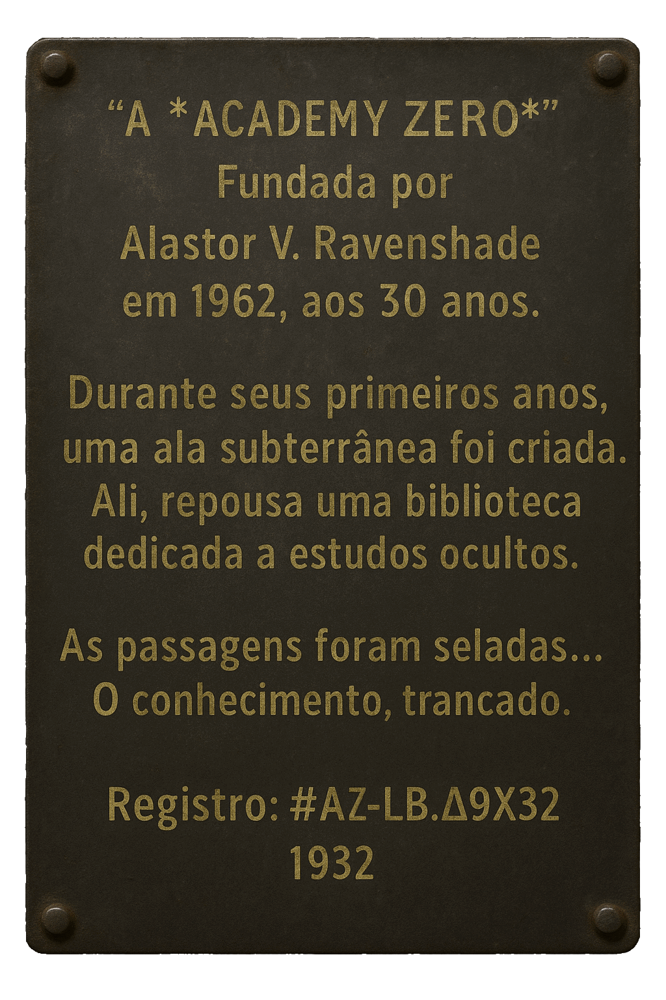

lore
Descrição Geral: Nosso mundo é um grande plano circular, com o Polo Norte no centro. Esse mundo é chamado de (terra).
Muralha de Gelo:
As bordas do planeta são cercadas por uma imensa muralha de gelo, conhecida como a Muralha da Antártica.
Essa barreira colossal é responsável por manter as águas dos oceanos contidas em seu lugar.
Impedimento Natural:
Acredita-se que as muralhas de gelo sejam intransponíveis, e lendas falam de perigos mortais para aqueles
que tentam cruzá-las. Como frios muito intensos, sé tenta chegar ao limite.
Proteção Divina:
Algumas culturas veem a muralha como uma proteção divina, um limite sagrado que mantém
o caos do vazio do universo afastado.
Firmamento:
Os Cientistas dizem que a um Firmamento em volta do todo o Planeta cobre todo o espaço e vai até os Limites da
Antártica, uma grande cúpula de Acrílico, dizendo assim. Este domo contém as estrelas, o sol e a lua.
Sol e Lua:
O sol e a lua, movendo-se em círculos acima da
(terra).
O movimento circular do sol e da lua cria o ciclo de dia e noite. Quando o sol está mais próximo de uma área,
é dia; quando está mais distante, é noite.
Estrelas e Planetas:
As estrelas estão fixas no domo, O domo gira ao redor do ponto central do mundo e os planetas podem ser
interpretados como luzes ou corpos que também se movem dentro do domo,
Eles podem ter trajetórias circulares ou espirais em torno do centro do mundo.
Estrelas Fixas:
As estrelas estão presas à superfície interna do domo e giram junto com ele.
Isso dá a impressão de que as estrelas estão se movendo pelo céu à medida que o domo gira.
Limitação do Mundo:
A maioria da população acredita firmemente que não existe nada além das muralhas de gelo.
Esta crença é ensinada desde a infância e reforçada pela tradição e educação.
Mitos e Lendas:
Existem histórias antigas sobre aventureiros que tentaram atravessar as muralhas e nunca retornaram,
fortalecendo a crença de que o mundo termina ali.
E uma ou duas pessoas disseram ter vistos outros continentes alem das bordas a Antártica.
Dogma Oficial:
As autoridades da
(terra),
promovem a ideia de que explorar além das muralhas é perigoso e desnecessário.
Clima Diurno:
O sol se move em círculos concêntricos acima do plano, criando o ciclo de dia e noite.
A duração do dia varia conforme a estação.
Estações do Ano:
As estações são causadas pelo caminho variável do sol e da lua sobre o plano, resultando em mudanças climáticas sazonais.
Exploração e Navegação: A navegação no mundo plano usa estrelas fixas no domo celestial para orientação, e exploração, Os mapas da (terra), são circulares e representam o mundo plano de forma única.
Densidade:
É a massa por unidade de volume de uma substância. Objetos mais densos têm mais massa em um volume menor,
enquanto objetos menos densos têm menos massa em um volume maior.
Flutuabilidade:
É a tendência de um objeto flutuar ou afundar em um fluido (líquido ou gás) com base na diferença de densidade.
Um objeto menos denso do que o fluido ao seu redor irá flutuar, enquanto um objeto mais denso afundará.
Experimentos de Laboratório:
Simulações onde os jogadores misturam líquidos de diferentes densidades e observam o comportamento de objetos neles.
Projetos Práticos:
Construção de dispositivos flutuantes que devem transportar objetos específicos através de corpos d’água.
Jardinagem e Cultivo:
Os Alunos aprendem sobre plantas exóticas e suas propriedades através de livros e aulas.
Informações Importantes: Cada planta exótica tem uma descrição,
habitat, propriedades especiais (medicinais, mágicas, etc.), e condições ideais de cultivo.
O Protocolo
ZFFRS (Zero Fragmentos do Fim Registro Sistema),
ou (Zero Fragmentos do Fim Registry System),
é um sistema usado para armazenar dados e informações dentro da rede.
Dizem que ele foi criado pelo Governo para guardar arquivos importantes.
Existem milhares de páginas armazenadas, muitas delas secretas, ocultas e escondidas, mas que ainda podem ser
acessadas caso alguém descubra os links corretos.
Teorias afirmam que foi por isso que surgiram as camadas do
sistema (SRP, SRE, SRR e SRZ),
atualmente as mais conhecidas e acessadas da rede. Antes disso, tudo era extremamente desorganizado,
e qualquer pessoa podia acabar encontrando conteúdos que não deveria ver.
Hoje, o sistema possui diferentes níveis de acesso. Quando o Governo não quer que algo seja encontrado,
os arquivos são bloqueados com senhas
ou ocultados dentro das camadas da rede.
Segundo relatos, nada dentro do ZFFRS pode ser realmente apagado.
Quando um arquivo é deletado, ele apenas é movido para outro local fora das camadas conhecidas do sistema.
Ainda assim, alguns afirmam que é possível acessá-los
caso o link gerado pelo protocolo seja encontrado.
Existem rumores de pessoas que conseguiram recuperar arquivos apagados utilizando estruturas parecidas
com (zffrs://), mas substituindo os dois pontos por uma
exclamação: (zffrs!//). Dizem que isso permitia acessar conteúdos
sem precisar navegar pelas camadas normais da rede.
Descrição da Rede Z:
A Rede (Z : Zero) reúne registros, dados e páginas sobre o cotidiano escolar.
Entre conteúdos comuns, como estudos e relatos pessoais, existem registros incomuns e difíceis de classificar.
Algumas páginas parecem normais… outras, nem tanto.
Fragments:
Os Fragments são conjuntos de páginas digitais pertencentes á Rede Z.
Uma única página também pode ser chamada de Fragment quando referenciada individualmente.
Cada Pagina pertence a um Setor específico, sendo ele responsável por armazenar os chamados Fragments (Páginas).
Todos os Setores ficam vinculados ao Protocolo, sistema central que mantém a rede em funcionamento.
O protocolo utiliza a
estrutura: (zffrs).
Mais seu separador: (://).
O Protocolo é o sistema responsável por manter tudo funcionando. Esse sistema é
muito complexo, sendo capaz de se gerenciar de forma autônoma. Além disso, ele não permite que nada seja deletado.
Quando isso ocorre, o separador
original: (://).
Muda para: (!//).
Saindo de qualquer Setor predefinido e ganhando um link com caracteres aleatórios. Para encontrá-lo novamente, utiliza-se o
Protocolo com o separador alternado mais o link, ficando algo do
tipo: (zffrs!//a4e@1f0#0Yh9!u).
Tornando o processo de recuperação quase impossível, já que o sistema não informa o link do arquivo deletado.
É por isso que existem fóruns de Mineradores, responsáveis por testar milhares de combinações
possíveis em busca de arquivos perdidos.
Pagando um alto preço, eles oferecem seus serviços para recuperar dados apagados.
Setores :
SRP
(Público),
SRE
(Escola),
SRR
(Restrito),
SRZ
(Oculto).
SRP: Setor da Rede Pública.
O SRP (Setor da Rede Pública) reúne páginas acessíveis ao público geral. Inclui relatos pessoais,
fóruns, páginas informativas, experiências cotidianas e conteúdos compartilhados livremente pelos usuários da Rede Z.
As páginas do SRP utilizam a terminação:
(.pub).
SRE: Setor da Rede Escolar.
O SRE (Setor da Rede Escolar) é destinado ao armazenamento de conteúdos acadêmicos e registros educacionais.
Abriga materiais de estudo, pesquisas, arquivos escolares e páginas vinculadas a instituições de ensino.
As páginas do SRE utilizam a terminação:
(.edu).
SRR: Setor da Rede Restrita.
O SRR (Setor da Rede Restrita) contém páginas protegidas por autenticação e níveis específicos de acesso.
Empresas, organizações e setores administrativos utilizam essa
área para armazenar registros confidenciais e informações protegidas.
As páginas do SRR utilizam a terminação:
(.lock).
SRZ: Setor da Rede Zero.
O SRZ (Setor da Rede Zero) é uma camada incomum do Sistema, associada a registros corrompidos, arquivos
incompletos e páginas sem origem identificada. Seu acesso não é documentado oficialmente, e
parte dos conteúdos presentes nesse setor aparenta violar as estruturas normais da rede.
As páginas do SRZ utilizam a terminação:
(.null).
Protocolo : ZFFRS
(zffrs).
Rede :
Zero Fragments of the End Registry System:
Z : Zero :
A rede onde tudo é registrado... mesmo o que deveria desaparecer.
Rede Z (Zero Fragments of the End Registry System) é a principal estrutura de rede utilizada para armazenamento,
acesso e compartilhamento de registros digitais. O sistema é dividido em setores específicos, cada um responsável
por diferentes tipos de dados, acessos e níveis de permissão.
Algumas áreas da rede são públicas e acessíveis normalmente.
Outras exigem permissões especiais, enquanto certos setores sequer deveriam ser encontrados por usuários comuns.
Estruturas de Categorias das Buscas:
Vergonha: É uma condição psicológica, com uma sintomatologia de estados fisiológicos,
emocionais e cognitivos de autoanulação subjetiva.
Medo: É uma sensação que proporciona um estado de alerta demonstrado pelo receio de fazer
alguma coisa, geralmente por ser sentir ameaçado, tanto fisicamente como psicologicamente. Pavor é a ênfase do medo.
Alívio (Controle):
É a súbita dissipação de uma pressão dolorosa e latejante assim que a mente autoriza o corpo a se soltar.
É o momento em que a bexiga, antes tensa e no limite, finalmente se esvazia em um fluxo contínuo, trazendo
uma onda de relaxamento que percorre a espinha e faz os ombros baixarem instantaneamente.
Alívio (Acidente):
Uma rendição involuntária e quente. É o instante em que a agonia da retenção é substituída por um desabafo físico inevitável;
embora acompanhado pelo peso do erro, o corpo ignora a mente e prioriza a própria sobrevivência,
trocando a pressão insuportável por uma liberação súbita, silenciosa e absoluta.
Ansiedade: É uma emoção caracterizada por um estado desagradável de agitação interior,
muitas vezes acompanhada de comportamento nervoso, como o de se embalar de trás para frente.
Separações : Conteúdos.
| Categoria | Subcategoria | Tipo | ID | Assuntos |
|---|---|---|---|---|
| Pagina | Público | Fragments | A | Lara. |
| A | Assunto... | |||
| Cotidiano | ||||
| Escola | ||||
| Psicologia | ||||
| Plantas | ||||
Medo : Bexiga Nervosa:
Medo Extremo
Quando você sente um medo extremo, o cérebro entra no modo de "Luta ou Fuga".
Nesse estado, o sistema nervoso simpático assume o controle para priorizar os músculos que vão te ajudar a correr ou brigar.
O cérebro entende que manter a urina guardada consome energia e atenção que deveriam estar focadas na sobrevivência.
Então, em alguns casos, ele "desliga" o controle consciente do esfíncter para "aliviar o peso" e focar no perigo.
Descrição:
Lara é uma página dedicada ao compartilhamento de experiências pessoais e sentimentos.
Surgiu como um espaço onde memórias não são apenas lembradas, mas revividas através das emoções de quem as escreveu.
Seu objetivo é permitir que os usuários expressem sentimentos, contem suas histórias e encontrem outras pessoas que
passaram por situações semelhantes. Explorando emoções como medo, vergonha, alívio e descoberta.
Aqui, usuários registram relatos sobre momentos marcantes de suas vidas, desde situações comuns até histórias mais íntimas.
Cada relato carrega emoções reais, dúvidas, inseguranças e descobertas pessoais.
O foco não é apenas o que aconteceu, mas como cada pessoa se sentiu.
Aqui, os usuários não compartilham apenas acontecimentos...
Eles revelam partes de si mesmos.
A Lara funciona como um espaço de desabafo, reflexão e conexão, onde
diferentes vivências podem ser compartilhadas sem julgamentos.
Mais do que contar histórias, a Lara permite que cada pessoa entenda melhor a si mesma,
ao mesmo tempo em que encontra identificação em experiências de outros.
Paginas:
Lara:
(zffrs://srp.lara.pub).
O link é : A pagina inicial do set Lara.
Fundou : Academy Zero: 
Academy Zero foi fundada em 1962 por
Alastor V. Ravenshade... “Quando
tinha 30 anos Fundou a Academy Zero”
Placa com Informações Sobre o Fundador da Escola:
Placa Fundador: link
[(Placa
deixada pelo Fundador)]
[...]
[...]
[...]
[...]
[...]
[...]
[...]
[...]
[...]
[...]
[...]
[...]
[...]
[...]
[...]
[...]
[...]
[...]
[...]
[...]
[...]
[...]